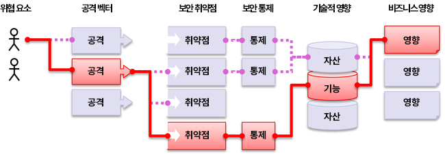

애플리케이션 보안 위험이란 무엇인가?
공격자는 애플리케이션을 통해 다양한 경로로 비즈니스 또는 조직에 피해를 입힐 수 있다. 각 경로는 잠재적 위험을 수반하며, 이를 조사해야 한다.

| 위협 행위자 | 공격 벡터 | 악용 가능성 | 보안 통제 미비 가능성 | 기술적 영향 | 비즈니스 영향 |
| 환경에 따라, 상황에 따라 동적으로 변화 | 애플리케이션 노출 수준에 따라(환경 기준) | 평균 가중 악용 | 통제 누락을 평균 발생률로 산정하고 커버리지로 가중 | 평균 가중 영향 | 비즈니스 기준 |
본 위험 등급(Risk Rating)은 악용 가능성, 취약점에서 보안 통제가 누락되어 있을 평균 가능성, 그리고 기술적 영향을 공통 평가 요소로 산정에 반영하였다.
조직은 각기 고유하며, 해당 조직을 대상으로 하는 위협 행위자, 그들의 목표, 그리고 침해 발생 시 영향도 또한 고유하다. 공익 단체가 대외 정보 제공을 위해 콘텐츠 관리 시스템(Contents Management System, CMS)을 사용하는 경우와, 의료 시스템에서 동일한 CMS를 민감한 의료 정보에 사용하는 경우를 비교하면, 같은 소프트웨어라 하더라도 위협 행위자와 비즈니스 영향은 크게 달라질 수 있다. 애플리케이션의 노출 수준, 상황별 위협 행위자(비즈니스 및 지역에 따른 표적 공격과 비표적 공격), 그리고 개별 비즈니스 영향을 바탕으로 조직의 위험을 이해하는 것이 중요하다.
범주를 선택하고 순위를 매기기 위해 데이터가 사용되는 방식
2017년에는 발생률(incidence rate)을 기준으로 가능성(likelihood)을 산정하여 범주를 선정한 뒤, 수십 년의 경험을 바탕으로 한 팀 논의를 통해 악용 가능성(Exploitability), 탐지 가능성(Detectability, 가능성에 포함), 기술적 영향(Technical Impact)을 기준으로 순위를 매겼다. 2021년에는 미국 국가 취약점 데이터베이스(National Vulnerability Database, NVD)의 CVSSv2 및 CVSSv3 점수에서 악용 가능성과 (기술적) 영향을 나타내는 데이터를 활용하였다. 2025년에는 2021년에 수립한 동일한 방법론을 계속 적용하였다.
우리는 OWASP Dependency-Check를 다운로드하여 관련 CWE(Common Weakness Enumeration)별로 그룹화된 CVSS 악용(Exploit) 점수와 영향 점수를 추출하였다. 모든 CVE에는 CVSSv2 점수가 존재하지만, CVSSv2에는 결함이 있으며 CVSSv3는 이를 보완해야 하므로 상당한 조사와 노력이 필요했다. 또한 일정 시점 이후에는 모든 CVE에 CVSSv3 점수도 함께 부여된다. 더불어 CVSSv2와 CVSSv3 사이에는 점수 범위와 산정 공식이 업데이트되었다.
CVSSv2에서는 악용과 (기술적) 영향 모두 최대 10.0까지 가능했으나, 산정 공식에 의해 악용은 60%, 영향은 40%로 낮춰졌다. CVSSv3에서는 이론상 최대값이 악용 6.0, 영향 4.0으로 제한되었다. 이러한 가중치를 고려하면, CVSSv3에서 영향 점수는 더 높아져 평균적으로 거의 1.5점 상승했고, 2021 Top 10 분석을 수행했을 때 악용 가능성은 평균적으로 거의 0.5점 하락한 것으로 나타났다.
OWASP Dependency-Check에서 추출한 결과, 미국 국가 취약점 데이터베이스(National Vulnerability Database, NVD)에는 CWE에 매핑된 CVE 레코드가 약 17만 5천 건(2021년의 12만 5천 건에서 증가) 존재한다. 또한 CVE에 매핑된 고유 CWE는 643개(2021년의 241개에서 증가)이다. 추출된 약 22만 건의 CVE 중 16만 건에는 CVSS v2 점수가, 15만 6천 건에는 CVSS v3 점수가, 6천 건에는 CVSS v4 점수가 있었다. 다수의 CVE가 여러 버전의 점수를 동시에 보유하므로, 점수 건수 합계는 22만 건을 초과한다.
Top 10 2025에서는 다음과 같은 방식으로 악용과 영향의 평균 점수를 산정하였다. CVSS 점수가 있는 모든 CVE를 CWE별로 그룹화한 뒤, 악용 점수와 영향 점수 모두에 대해 CVSSv3 점수를 보유한 비율과 나머지 CVSSv2 점수 보유 비율을 가중치로 적용하여 전체 평균을 산출하였다. 이렇게 산출한 평균을 데이터셋의 CWE에 매핑하여, 위험 방정식의 나머지 절반에 해당하는 악용 및 기술적 영향 점수로 사용하였다.
왜 CVSS v4.0을 사용하지 않았을까? 이는 점수 산정 알고리즘이 근본적으로 변경되어, CVSSv2와 CVSSv3처럼 악용 또는 영향 점수를 쉽게 도출할 수 없기 때문이다. 향후 Top 10 버전에서는 CVSS v4.0 점수를 활용할 수 있는 방법을 모색할 예정이지만, 2025년판에서는 이를 적시에 반영할 방안을 도출하지 못했다.
발생률은 일정 기간 동안 조직이 테스트한 애플리케이션 모집단에서, 각 CWE에 취약한 애플리케이션의 비율로 산정하였다. 다시 말해, 우리는 빈도(frequency), 즉 한 애플리케이션에서 문제가 몇 번 발견되는지는 사용하지 않는다. 관심 대상은 애플리케이션 모집단 중 각 CWE가 발견된 애플리케이션의 비율이다.
커버리지(coverage)는 특정 CWE에 대해 모든 조직이 테스트한 애플리케이션의 비율로 산정한다. 커버리지가 높을수록 표본 크기가 모집단을 더 잘 대표하므로, 산정된 발생률이 정확하다는 보증 수준이 더 강해진다.
이번 버전에서 사용한 공식은 2021년과 유사하되, 일부 가중치가 변경되었다. (최대 발생률 % * 1000) + (최대 커버리지 % * 100) + (평균 악용 * 10) + (평균 영향 * 20) + (발생 건수 합 / 10000) = 위험 점수
산정된 점수는 불충분한 접근 제어(Broken Access Control) 범주에서 621.60으로 가장 높았고, 메모리 관리 오류(Memory Management Errors) 범주에서 271.08로 가장 낮았다.
이는 완벽한 체계는 아니지만, 위험 범주의 순위를 매기는 데 유용하다.
추가로 커지고 있는 과제 중 하나는 "애플리케이션"의 정의이다. 업계가 마이크로서비스와 같이 전통적인 애플리케이션보다 더 작은 구성요소로 이루어진 아키텍처로 전환함에 따라, 산정이 더 어려워지고 있다. 예를 들어 조직이 코드 리포지토리를 테스트하는 경우, 무엇을 애플리케이션으로 간주해야 하는가? CVSSv4의 확산과 마찬가지로, Top 10의 다음 판에서는 끊임없이 변화하는 산업 환경을 반영하기 위해 분석과 점수 산정을 조정해야 할 수 있다.
데이터 요소
Top 10 각 범주에는 다음과 같은 데이터 요소가 제시되며, 의미는 다음과 같다.
매핑된 CWE(CWEs Mapped): Top 10 팀이 해당 범주에 매핑한 CWE의 개수.
발생률(Incidence Rate): 발생률은 해당 연도에 그 조직이 테스트한 모집단에서, 해당 CWE에 취약한 애플리케이션의 비율이다.
가중 악용(Weighted Exploit): CWE에 매핑된 CVE에 부여된 CVSSv2 및 CVSSv3 점수의 악용 하위 점수를 정규화하여 10점 척도에 맞춘 값이다.
가중 영향(Weighted Impact): CWE에 매핑된 CVE에 부여된 CVSSv2 및 CVSSv3 점수의 영향 하위 점수를 정규화하여 10점 척도에 맞춘 값이다.
(테스트) 커버리지((Testing) Coverage): 특정 CWE에 대해 모든 조직이 테스트한 애플리케이션의 비율이다.
총 발생 건수(Total Occurrences): 범주에 매핑된 CWE가 발견된 애플리케이션의 총 개수.
총 CVE(Total CVEs): 해당 범주에 매핑된 CWE에 매핑된 NVD DB 내 CVE의 총 개수.
공식(Formula): (최대 발생률 % * 1000) + (최대 커버리지 % * 100) + (평균 악용 * 10) + (평균 영향 * 20) + (발생 건수 합 / 10000) = 위험 점수